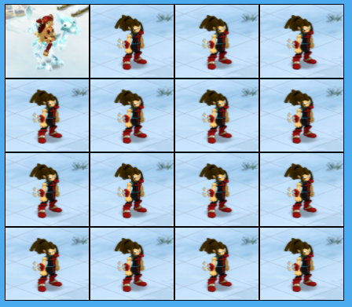
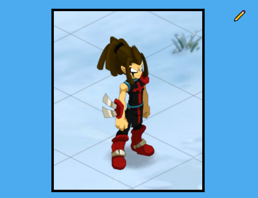

A PROPOS DE MOI
Étudiant a l'Eisine en Licence professionnelles Métiers du numériques : conception, rédaction et réalisation wen - parcours intégration et webdesign - Charleville Mézières
Je m'appelle Théo VAUCHER, passionné par le web et le monde de l'informatique en général.
Dans ce portfolio que j'ai réalisé, je vais vous présenter mes compétences, mon parcours ainsi que mes principales réalisations.
Ce portfolio a pour but de présenter les différents projets sur lesquels j'ai travaillé ces dernières années. Vous pouvez également visualiser mon CV et le télécharger.
Si vous avez une question, ou si vous avez simplement besoin d'un renseignement, vous pouvez me contacter en cliquant ici.
MON PARCOURS
En cours
Titulaire Licence pro
Eisine Charleville Mézières
Licence pro : Intégration web
2020
Technicien Supérieur
Lycée Polyvalent Francois Bazin Charleville Mézières
BTS SN(Systèmes Numériques) - Option : Électronique et communications
2018
Titulaire Bac S option : SVT
Cité scolaire Alfred KASTLER Stenay
Terminale S option : SVT
MON EXPÉRIENCES
2019 - 6 semaines
Stage de technicien
ARELIS à Marville
configuration machine avec le programme interne et modélisation 3D basique
2018 - 3 semaines
Technicien en conditionnement dans une usine de fromagerie
SCHREIBER Cléry le petit
Conditionnement
2015 - 1 semaine
Stage d'observation de 3e en Informatique
ID-COM à Stenay
Observation dans le fonctionnement d'une entreprise de ventes d'objets informatique
Compétences techniques
HTML
CSS
PHP
MySQL
JavaScript
Responsive Design
Wordpress
Bootstrap
Python
Excel
Photoshop
Outils
-
Graphisme :
Illustrator, Photoshop -
Système :
Windows -
Bureautique :
Excel, Libre office
Savoir-être
- Rigoureux, adaptable, à l’écoute, organisé, Travail d'équipe
MES RÉALISATIONS
Voici quelques exemples de mes réalisations
Mon premier logo former à base de cercles :
Galerie photo avec ajout d'image, zoom ainsi que modificateur d'image en php :

